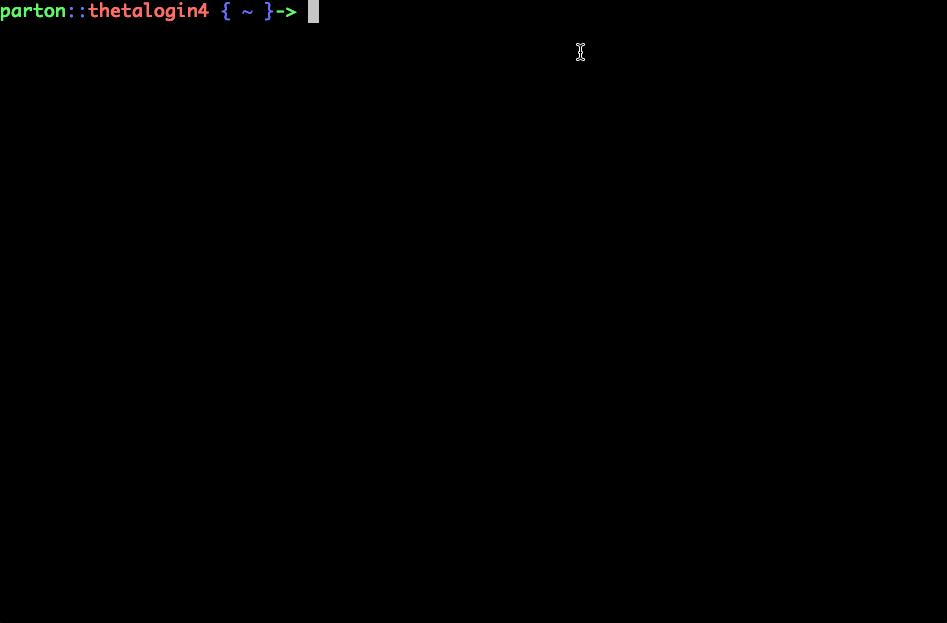

Containers on Theta(GPU)
Building using Docker
If you followed the Dockerfile instructions, using the Theta(GPU) specific Dockerfile_thetagpu you can build your container for theta gpu using:
singularity build <image_name> docker://<username>/<repo_name>:<tag>
# using tutorial example
singularity build my_image.simg docker://jtchilders/alcf_cwp_example:thetagpu

Then you can submit a job to Theta(GPU) using the job submission script
The output should look like this:
C++ MPI
Hello world from processor thetagpu12, rank 4 out of 16 processors
Hello world from processor thetagpu12, rank 7 out of 16 processors
Hello world from processor thetagpu12, rank 1 out of 16 processors
Hello world from processor thetagpu12, rank 5 out of 16 processors
Hello world from processor thetagpu12, rank 6 out of 16 processors
Hello world from processor thetagpu12, rank 0 out of 16 processors
Hello world from processor thetagpu12, rank 2 out of 16 processors
Hello world from processor thetagpu12, rank 3 out of 16 processors
Hello world from processor thetagpu18, rank 14 out of 16 processors
Hello world from processor thetagpu18, rank 15 out of 16 processors
Hello world from processor thetagpu18, rank 13 out of 16 processors
Hello world from processor thetagpu18, rank 8 out of 16 processors
Hello world from processor thetagpu18, rank 9 out of 16 processors
Hello world from processor thetagpu18, rank 11 out of 16 processors
Hello world from processor thetagpu18, rank 12 out of 16 processors
Hello world from processor thetagpu18, rank 10 out of 16 processors
Python MPI
Hello world from processor thetagpu18, rank 13 out of 16 processors
Hello world from processor thetagpu18, rank 8 out of 16 processors
Hello world from processor thetagpu18, rank 9 out of 16 processors
Hello world from processor thetagpu18, rank 14 out of 16 processors
Hello world from processor thetagpu18, rank 15 out of 16 processors
Hello world from processor thetagpu18, rank 11 out of 16 processors
Hello world from processor thetagpu18, rank 10 out of 16 processors
Hello world from processor thetagpu18, rank 12 out of 16 processors
Hello world from processor thetagpu12, rank 2 out of 16 processors
Hello world from processor thetagpu12, rank 5 out of 16 processors
Hello world from processor thetagpu12, rank 0 out of 16 processors
Hello world from processor thetagpu12, rank 6 out of 16 processors
Hello world from processor thetagpu12, rank 4 out of 16 processors
Hello world from processor thetagpu12, rank 1 out of 16 processors
Hello world from processor thetagpu12, rank 7 out of 16 processors
Hello world from processor thetagpu12, rank 3 out of 16 processors
Building using Singularity Recipes
While building using Docker on your local machine tends to be the easier method. There are sometimes reasons to build in the environment of the supercomputer. In this case, one can build a singularity container on ThetaGPU in an interactive session on a compute (or worker) node. First a recipe file is needed, below is an example singularity definition file which can also be found here.
Detailed directions for recipe construction are available on the Singularity Recipe Page.
Example Singularity definition file
Here we have defined the base image from which to bootstrap our container. We are using an image from Docker Hub, ubuntu:20.04.
The %files section lists files to copy from the host system (left path) to the container filesystem (right path)prior to build time.
The %environment section defines environment variables that will be available to the container at runtime.
%environment
export PATH=$PATH:/mpich/install/bin
export LD_LIBRARY_PATH=$LD_LIBRARY_PATH:/mpich/install/lib
The %post section executes within the container at build time on top of our ubuntu:20.04 operating system. The %post section is therefore the place to perform installations of custom apps with syntax similar to BASH.
%post
#### INSTALL BASE PACKAGES NEEDED FOR MPI APPLICATIONS AND PYTHON3 ####
DEBIAN_FRONTEND=noninteractive
apt-get update -y \
&& DEBIAN_FRONTEND=noninteractive \
&& apt-get install -y build-essential libfabric-dev libibverbs-dev gfortran wget \
&& apt-get install -y python3 python3-distutils python3-pip gcc
#### DOWNLOAD AND INSTALL MPICH AND MPI4PY ####
# Source is available at http://www.mpich.org/static/downloads/
# See installation guide of target MPICH version
# Ex: https://www.mpich.org/static/downloads/4.0.2/mpich-4.0.2-installguide.pdf
# These options are passed to the steps below
OPENMPI_VERSION_A="4.0"
OPENMPI_VERSION_B="4.0.5"
OPENMPI_CONFIGURE_OPTIONS="--prefix=/openmpi/install --disable-wrapper-rpath --disable-wrapper-runpath"
OPENMPI_MAKE_OPTIONS="-j"
mkdir -p openmpi
cd /openmpi
wget https://download.open-mpi.org/release/open-mpi/v${OPENMPI_VERSION_A}/openmpi-${OPENMPI_VERSION_B}.tar.gz
tar xfz openmpi-${OPENMPI_VERSION_B}.tar.gz --strip-components=1
./configure ${OPENMPI_CONFIGURE_OPTIONS}
make install ${OPENMPI_MAKE_OPTIONS}
export PATH=$PATH:/openmpi/install/bin
export LD_LIBRARY_PATH=$LD_LIBRARY_PATH:/openmpi/install/lib
pip install mpi4py
#### BUILD FILES ####
chmod +x /usr/submit.sh
mpicc -o /usr/source/mpi_hello_world /usr/source/mpi_hello_world.c
The %runscript section defines actions for the container to take when it is executed using singularity run <container_name>.
The %labels section allows for custom metadata to be added to the container.
The %help section can be used to define how to build and run the container.
%help
This is container is used to illustrate a mpi based def file to build a container running python and c programs. To build the container use singularity build --fakeroot mpi.sif mpi.def
Build Singularity container on ThetaGPU compute
After logging on to Theta login nodes, launch an interactive job using the attrs fakeroot=true, pubnet=true and specifying the filesystems filesystems=home,theta-fs0.
# on Theta login node, must load cobalt-gpu module to submit jobs to ThetaGPU
module load cobalt/cobalt-gpu
qsub -I -n 1 -t 01:00:00 -q single-gpu -A <project_name> --attrs fakeroot=true:pubnet=true:filesystems=home,theta-fs0
Before building the container make sure the ThetaGPU compute nodes have access to external resources, this is achieved by setting the http_proxy and https_proxy variables
# setup network proxy to reach outside world
export http_proxy=http://proxy.tmi.alcf.anl.gov:3128
export https_proxy=http://proxy.tmi.alcf.anl.gov:3128
Now build the container using --fakeroot where <def_filename>.def is the definition file we have defined in the example above and <image_name>.sif is the user defined image file name
Using mpi.def example
# important you run this in the proper path because the file copies in
# the `%files` section of the recipe uses relative paths on the host.
cd
singularity build --fakeroot <image_name>.sif <def_filename>.def
Run Singularity container on ThetaGPU compute
An example job submission script is here: job_submission_thetagpu.sh.
First we define our job and our script takes the container name as an input parameter.
#!/bin/bash -l
#COBALT -n 1
#COBALT -t 00:10:00
#COBALT -q single-gpu
#COBALT --attrs filesystems=home,theta-fs0:pubnet=true
CONTAINER=$1
Enable network access at run time by setting the proxy.
export http_proxy=http://proxy.tmi.alcf.anl.gov:3128
export https_proxy=http://proxy.tmi.alcf.anl.gov:3128
Setup our MPI settings, figure out number of nodes NODES and fix number of process per node PPN and multiply to get total MPI ranks PROCS.
NODES=`cat $COBALT_NODEFILE | wc -l`
PPN=8 # GPUs per NODE
PROCS=$((NODES * PPN))
echo NODES=$NODES PPN=$PPN PROCS=$PROCS
The OpenMPI installed on ThetaGPU must be used for MPI to properly run across nodes. Here the library path is added to SINGULARITYENV_LD_LIBRARY_PATH, which will be used by Singularity to set the container's LD_LIBRARY_PATH and therefore tell our executables where to find the MPI libraries.
MPI_BASE=/lus/theta-fs0/software/thetagpu/openmpi-4.0.5/
export LD_LIBRARY_PATH=$MPI_BASE/lib:$LD_LIBRARY_PATH
export SINGULARITYENV_LD_LIBRARY_PATH=$LD_LIBRARY_PATH
echo mpirun=$(which mpirun)
Finally the exectuable is launched. Notice on NVidia systems that the singularity exec or singularity run commands must use the --nv flag to pass important libraries/drivers from the host to the container environment.
mpirun -hostfile $COBALT_NODEFILE -n $PROCS -npernode $PPN singularity exec --nv -B $MPI_BASE $CONTAINER /usr/source/mpi_hello_world
The output should look like this:
C++ MPI
Hello world from processor thetagpu02, rank 12 out of 16 processors
Hello world from processor thetagpu02, rank 8 out of 16 processors
Hello world from processor thetagpu02, rank 10 out of 16 processors
Hello world from processor thetagpu02, rank 11 out of 16 processors
Hello world from processor thetagpu02, rank 13 out of 16 processors
Hello world from processor thetagpu02, rank 9 out of 16 processors
Hello world from processor thetagpu02, rank 14 out of 16 processors
Hello world from processor thetagpu02, rank 15 out of 16 processors
Hello world from processor thetagpu01, rank 0 out of 16 processors
Hello world from processor thetagpu01, rank 1 out of 16 processors
Hello world from processor thetagpu01, rank 2 out of 16 processors
Hello world from processor thetagpu01, rank 3 out of 16 processors
Hello world from processor thetagpu01, rank 4 out of 16 processors
Hello world from processor thetagpu01, rank 5 out of 16 processors
Hello world from processor thetagpu01, rank 6 out of 16 processors
Hello world from processor thetagpu01, rank 7 out of 16 processors
Python MPI
Hello world from processor thetagpu02, rank 9 out of 16 processors
Hello world from processor thetagpu02, rank 10 out of 16 processors
Hello world from processor thetagpu02, rank 11 out of 16 processors
Hello world from processor thetagpu02, rank 15 out of 16 processors
Hello world from processor thetagpu02, rank 13 out of 16 processors
Hello world from processor thetagpu02, rank 8 out of 16 processors
Hello world from processor thetagpu02, rank 12 out of 16 processors
Hello world from processor thetagpu02, rank 14 out of 16 processors
Hello world from processor thetagpu01, rank 7 out of 16 processors
Hello world from processor thetagpu01, rank 3 out of 16 processors
Hello world from processor thetagpu01, rank 1 out of 16 processors
Hello world from processor thetagpu01, rank 4 out of 16 processors
Hello world from processor thetagpu01, rank 5 out of 16 processors
Hello world from processor thetagpu01, rank 6 out of 16 processors
Hello world from processor thetagpu01, rank 0 out of 16 processors
Hello world from processor thetagpu01, rank 2 out of 16 processors
Pre-existing Images for Deep Learning
There are several containers on ThetaGPU that will help you get started with deep learning experiments that can efficiently use the A100 GPUs. We have different optimized container for DL here ls /lus/theta-fs0/software/thetagpu/nvidia-containers/
The bootstap.def gives an example of how these containers were created.
The image is bootstrapped from an NVidia image, in this case from a PyTorch build. One can also use the TensorFlow build. At the time of this writing, the latest tag for the PyTorch image was 22.04-py3, but users should select the version that best suits their needs.
%post
# Install mpi4py
CC=$(which mpicc) CXX=$(which mpicxx) pip install --no-cache-dir mpi4py
# Install horovod
CC=$(which mpicc) CXX=$(which mpicxx) HOROVOD_WITH_TORCH=1 pip install --no-cache-dir horovod